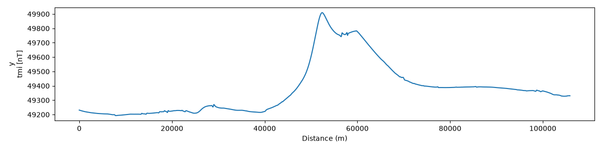
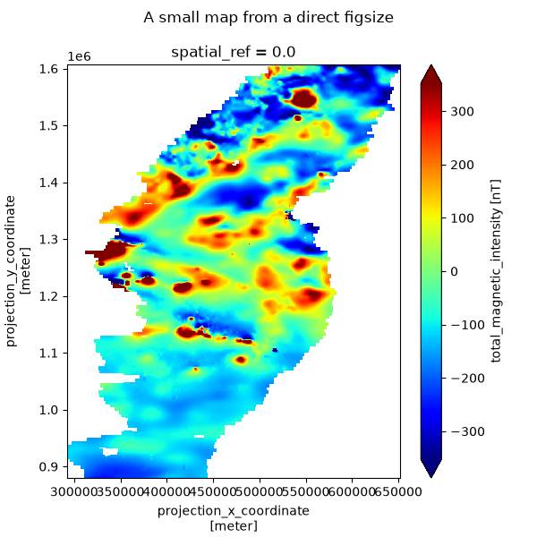
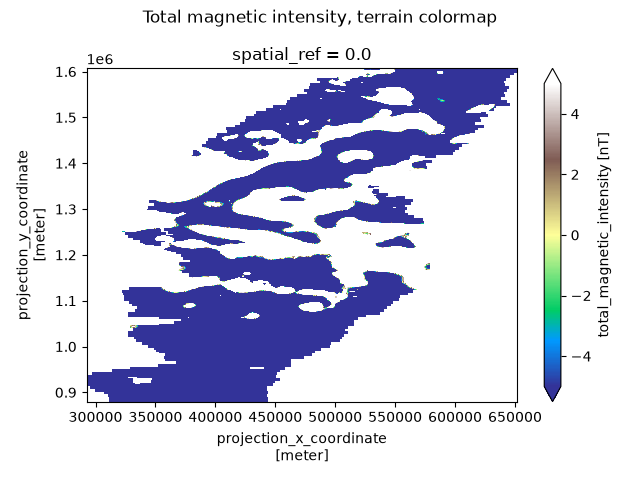
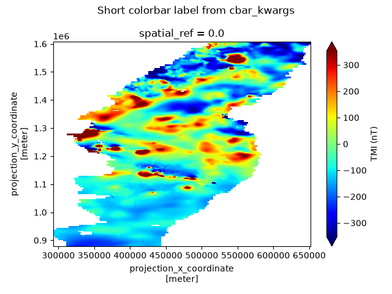
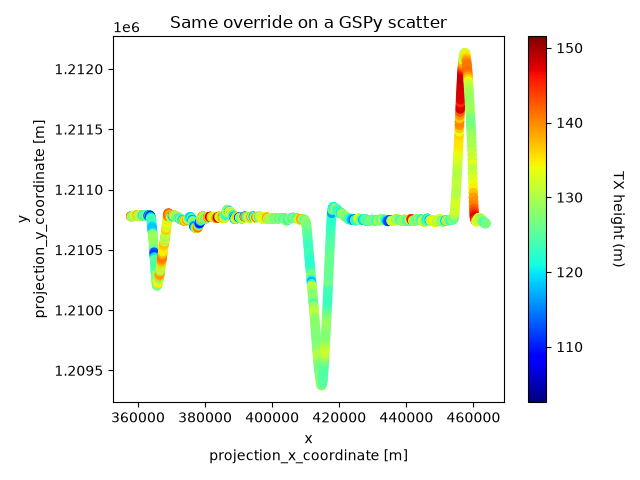
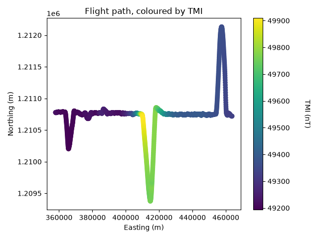
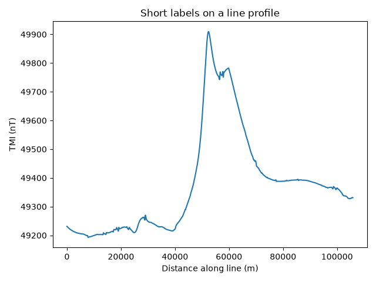

Note
Go to the end to download the full example code.
Customising Your Plots
GSPy and xarray plotters fill in labels, titles and colorbars from the data metadata - by default the CF standard name and units. Any of them can be overridden: the plotters take standard keyword arguments and they draw onto ordinary matplotlib figures. This example works through the most common customisations on the TEMPEST AEM survey.
Source Reference: Minsley, B.J., James, S.R., Bedrosian, P.A., Pace, M.D., Hoogenboom, B.E., and Burton, B.L., 2021, Airborne electromagnetic, magnetic, and radiometric survey of the Mississippi Alluvial Plain, November 2019 - March 2020: U.S. Geological Survey data release, https://doi.org/10.5066/P9E44CTQ.
import matplotlib.pyplot as plt
from os.path import isfile
import gspy
First open the netcdf GS standard file, generate it if doesn’t already exist
input_file = "../data_files/tempest_aseg/Tempest.nc"
if not isfile(input_file):
import subprocess
import sys
subprocess.run([sys.executable, "../Creating_GS_Files/plot_aseg_tempest.py"])
survey = gspy.open_datatree(input_file)['survey']
Figure size
Create the figure with the size you want - in inches - before plotting:
plt.figure(figsize=(12, 3))
survey['data/raw_data'].gs.plot('tmi', x='distance')
plt.tight_layout()

xarray’s plotter also takes figsize directly, which is handy when it is the one creating the figure:
survey['derived_maps/maps']['magnetic_tmi'].plot(cmap='jet', robust=True,
figsize=(6, 6))
plt.suptitle("A small map from a direct figsize")

Text(0.5, 0.98, 'A small map from a direct figsize')
Titles
Tabular plots use plt.title as normal. Raster plots through xarray’s plotter
write their title as a super-title, and if left alone fill it from any
leftover scalar coordinate - such as the CRS variable spatial_ref, which
prints as “spatial_ref=0.0” and carries no information. Setting the
super-title afterwards replaces it:
plt.figure()
survey['derived_maps/maps']['magnetic_tmi'].plot(cmap='jet', robust=True)
plt.suptitle("Total magnetic intensity")
plt.tight_layout()
Colormaps and color range
cmap takes any installed matplotlib colormap name. Set the colour range with vmin and vmax, or use robust=True to clip it to the 2nd-98th percentiles instead of the extremes, which keeps a few outliers from washing out the map:
plt.figure()
survey['derived_maps/maps']['magnetic_tmi'].plot(cmap='terrain', vmin=-5, vmax=5, robust=False)
plt.suptitle("Total magnetic intensity, terrain colormap")
plt.tight_layout()

Colorbar label
xarray’s plotter takes cbar_kwargs, passed straight to the colorbar - the quickest way to shorten its label. On a GSPy scatter, the colorbar is an extra axes on the figure and its label can simply be replaced:
plt.figure()
survey['derived_maps/maps']['magnetic_tmi'].plot(cmap='jet', robust=True,
cbar_kwargs={'label': 'TMI (nT)'})
plt.suptitle("Short colorbar label from cbar_kwargs")
plt.tight_layout()
fig, ax = plt.subplots()
survey['data/raw_data'].gs.scatter(hue='tx_height', cmap='jet', ax=ax)
fig.axes[-1].set_ylabel("TX height (m)")
ax.set_title("Same override on a GSPy scatter")
fig.tight_layout()


Overriding the automatic axis labels
GSPy builds its axis labels from the coordinate metadata: the CF standard name and units. Where a variable has no standard name its long name is used, and that text can run to several lines. The figures are ordinary matplotlib figures, so every label can be replaced afterwards whatever it started as. This also works on xarray raster plots, whose axis labels come from the coordinates:
fig, ax = plt.subplots()
survey['data/raw_data'].gs.scatter(hue='tmi', cmap='viridis', ax=ax)
ax.set_xlabel("Easting (m)")
ax.set_ylabel("Northing (m)")
ax.set_title("Flight path, coloured by TMI")
fig.axes[-1].set_ylabel("TMI (nT)")
fig.tight_layout()

On a line profile, the same holds - the metadata labels are drawn first and overwritten after:
plt.figure()
survey['data/raw_data'].gs.plot('tmi', x='distance')
plt.xlabel("Distance along line (m)")
plt.ylabel("TMI (nT)")
plt.title("Short labels on a line profile")
plt.tight_layout()
plt.show()

Total running time of the script: (0 minutes 1.359 seconds)